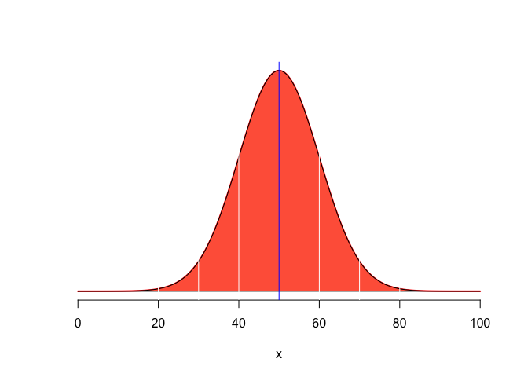
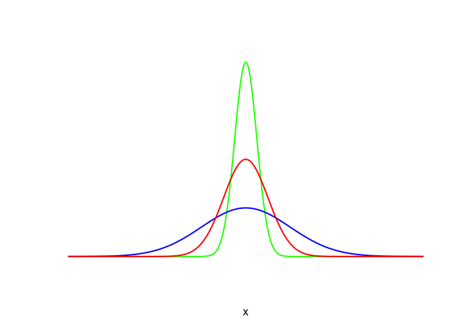
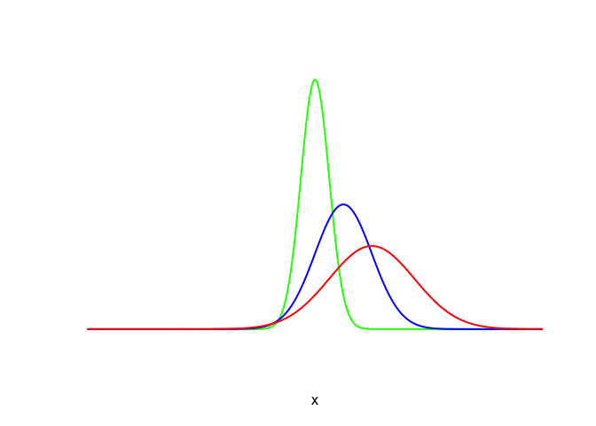
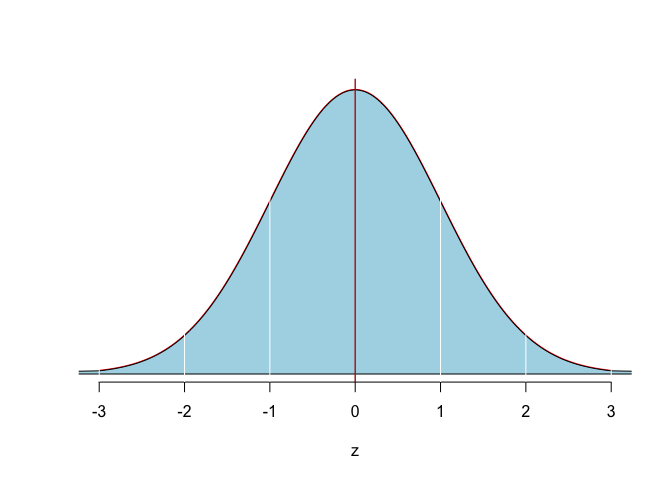
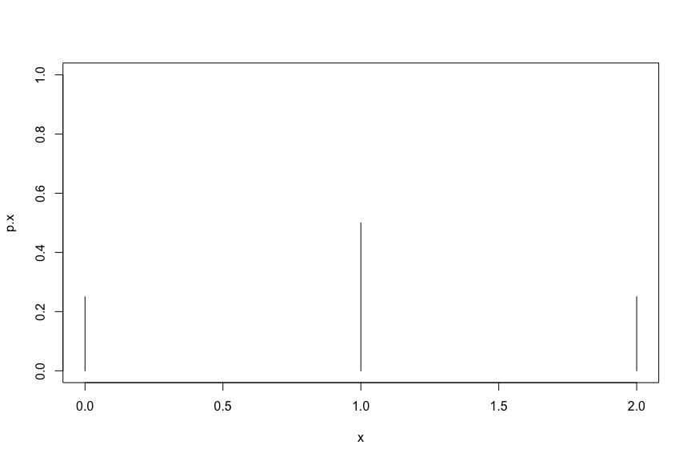

The Normal distribution is expressed as: \[\sim N(): f(Y)=\dfrac{1}{\sigma{\sqrt{2\pi}}}e^{-(Y-\mu)^{2}/2\sigma^{2}}\] where \(\mu=\) mean; \(\sigma=\) s.d., \(\pi=3.14159\), and; \(e=2.71828\)
Two parameters \((\mu; \sigma)\) describe a Normal distribution. The Normal distribution is symmetric, with the tails extending from \(-\infty\) to \(+\infty\). Note that \(\mu\) can be positive, negative, or zero while \(\sigma\) dictates how wide or flat the curve is. The total area under the Normal curve is \(1\), and the area to the left of \(\mu\) is 0.5; the area to the right of \(\mu\) is 0.5
x <- seq(0,100,length=200)
y <- dnorm(x,mean=50,sd=10)
plot(x, y, type="l", lwd=2, col="red",
bty="n", yaxt="no", ylab="")
polygon(c(0,x,100),c(0,y,0),col="tomato1")
abline(v=c(40,60), col="white")
abline(v=c(30,70), col="white")
abline(v=c(20,80), col="white")
abline(v=c(50), col="blue")
Now we can sketch some Normal distributions with the same mean but different variability.
# Same Mean, different Variance #
x=seq(-8,8,length=500)
y3=dnorm(x,mean=0,sd=1/2)
plot(x,y3,type="l",lwd=2,col="green", bty="n", xaxt="no", yaxt="no", ylab="")
y2=dnorm(x,mean=0,sd=2)
lines(x,y2,type="l",lwd=2,col="blue")
y1=dnorm(x,mean=0,sd=1)
lines(x,y1,type="l",lwd=2,col="red")
And now with different means but the same variability.
# Different Mean, different Variance #
x=seq(-8,8,length=500)
y3=dnorm(x,mean=0,sd=1/2)
plot(x,y3,type="l",lwd=2,col="green", bty="n", xaxt="no", yaxt="no", ylab="")
y2=dnorm(x,mean=1,sd=1)
lines(x,y2,type="l",lwd=2,col="blue")
y1=dnorm(x,mean=2,sd=1.5)
lines(x,y1,type="l",lwd=2,col="red")
z <- seq(-3,3,length=200)
y <- dnorm(z,mean=0,sd=1)
plot(z, y, type="l", lwd=2, col="red",
bty="n", yaxt="no", ylab="")
polygon(c(-5,z,5),c(0,y,0),col="lightblue")
abline(v=c(-1,1), col="white")
abline(v=c(-2,2), col="white")
abline(v=c(-3,3), col="white")
abline(v=c(0,0), col="firebrick")
It is a given that for every \(z-score\) distribution a specific proportion of the distributions falls within 1 standard deviation. Let us see what this is. First we will calculate the area above \(z=+1\) and given the symmetry, we know this is also the area below \(z=-1\) :
pnorm(1, 0, 1, lower.tail=FALSE)## [1] 0.1586553Therefore, the area between \(z-scores = \pm 1\) has to be 0.6826895. What about the area between \(z-scores = \pm 2\)?
pnorm(2, 0, 1, lower.tail=FALSE)## [1] 0.02275013The area between \(z-scores = \pm 2\) has to be 0.9544997.
Okay, so thus far the Empirical Rule seems to be true. But what if I wanted to know what \(z-scores\) trap 95% of the distribution? This can be estimated as follows:
qnorm(0.025, lower.tail=TRUE)## [1] -1.959964qnorm(0.025, lower.tail=FALSE)## [1] 1.959964So, in essence, \(z-scores=\pm1.959964 \approx \pm 1.96\) trap 95% of the distribution. What about 99% of the distribution?
qnorm(0.005, lower.tail=TRUE)## [1] -2.575829qnorm(0.005, lower.tail=FALSE)## [1] 2.575829Well that turns out to be \(\approx \pm 2.58\)
We can store these two values – \(z-scores = \pm 1.96\) flag the middle 95% of the distribution, and \(z-scores = \pm2.58\) flag the middle 99% of the distribution.
In the problems that follow you will see the 95% confidence interval being calculated with \(z=\pm 1.96\); this is where this value of \(1.96\) is coming from.
Given a certain number of independent trials (\(n\)) with an identical probability (\(p\)) of success (\(X\)) in each trial we can easily calculate the probability of seeing a specific number of successes. For example, if I flip a coin 10 times, where \(X=Head\) with \(p=0.5\) then what is probability of seeing exactly 2 heads, exactly 4 heads, 7 heads, etc.? The answer is easily calculated as: \[ P\left[X \text{ successes}\right] = \binom{n}{X}p^{X}\left(1 - p\right)^{n-X} \\ \text{where } \binom{n}{x} = \dfrac{n!}{X!(n-X)!} \text{ and } \\ n! = n \times (n-1) \times (n-2) \times \cdots \times 2 \times 1\]
R has built-in functions to perform the calculations for us. For example, if I toss a coin 2 times, what is the probability of getting exactly 1 head? Let \(X=1\). We know for unbiased coins \(p(Heads)=0.50\). We are also conducting \(n=2\) independent trials.
x <- 0:2
p.x <- dbinom(x, 2, p=0.5)
cbind(x, p.x)## x p.x
## [1,] 0 0.25
## [2,] 1 0.50
## [3,] 2 0.25plot(x, p.x, type = "h", ylim=c(0,1))
The observed proportion of wallets returned was \(\frac{101}{240}=\) 0.4208333
We know that \(p^{'}=\dfrac{X+2}{n+4}\) and so we can calculate this as follows:
n <- 240; X <- 101
p.prime <- (X + 2)/(n + 4)
p.prime## [1] 0.4221311So \(p^{'}=\) 0.4221311
We have \(z \approx 1.96\) as the \(z-score\) to be used for the 95% confidence interval and hence the lower-bound is:
z <- 1.96
z## [1] 1.96se.p.prime <- sqrt((p.prime * (1 - p.prime))/(n+4))
p.95CI.lower <- p.prime - z*(se.p.prime)
p.95CI.upper <- p.prime + z*(se.p.prime)
p.95CI.lower; p.95CI.upper## [1] 0.3601586## [1] 0.4841037So the lower-bound and upper-bound are 0.3601586 and 0.4841037, respectively.
The two values that lie within the most plausible range would be \(0.37, 0.47\), respectively, and two values that would fall outside this range would be \(0.35, 0.49\), respectively.
Because the null proportion of 0.5 does not fall within the interval we would be able to reject \(H_0\) if we were using a significance level of 0.05 (i.e, \(\alpha=0.05\)).
For completeness’ sake, note that R could do these calculations very swiftly:
library(binom)
binom.test(X, n, p=0.5, alternative="two.sided", conf.level=0.95)##
## Exact binomial test
##
## data: X and n
## number of successes = 101, number of trials = 240, p-value =
## 0.01674
## alternative hypothesis: true probability of success is not equal to 0.5
## 95 percent confidence interval:
## 0.3576151 0.4860318
## sample estimates:
## probability of success
## 0.4208333binom.confint(X, n, p=0.5, alternative="two.sided", conf.level=0.95, methods="ac")## method x n mean lower upper
## 1 agresti-coull 101 240 0.4208333 0.3600899 0.4840711Note a couple of things. First, binom.test() is calculating the default Wald confidence interval whereas binom.confint allows us to choose what method we want and in this example you see the Agresti-Coull method being used via the methods=“ac” switch.
The Agresti-Coull method used by R is slightly different from that listed in the text. In particular, “for a 95% confidence interval, this method does not use the concept of”adding 2 successes and 2 failures," but rather uses the formulas explicitly described in the following link: http://en.wikipedia.org/wiki/Binomial_proportion_confidence_interval#Agresti-Coull_Interval." As a result our manual calculations will not synchronize 1:1 with the confidence interval generated by binom.confint.
Remember: If \(n\) is small and/or \(p\) is close to \(0\) or \(1\) then the Agresti-Coull method is preferred.
Assume that they are just as likely to have boys as girls. This then generates the following hypotheses: \[H_0: \text{ Radiologsts are just as likely to have sons as daughters } (p=0.5)\] \[H_A: \text{ Radiologsts are not as likely to have sons as daughters } (p \neq 0.5)\] Let \(\alpha=0.05\)
binom.test(30, 87, p=0.5, alternative="two.sided", conf.level=0.95)##
## Exact binomial test
##
## data: 30 and 87
## number of successes = 30, number of trials = 87, p-value =
## 0.005014
## alternative hypothesis: true probability of success is not equal to 0.5
## 95 percent confidence interval:
## 0.2461396 0.4544136
## sample estimates:
## probability of success
## 0.3448276The \(p-value = 0.005014\) so we can reject \(H_0\); the data provide sufficient evidence to conclude that radiologists are not as likely to have sons as daughters.
What if we suspected, a priori that radiologists are less likely to have sons? In that case we would have done the following: \[H_0: \text{ Radiologsts are at least as likely to have sons as daughters } (p \geq 0.5)\] \[H_A: \text{ Radiologsts are less likely to have sons than daughters } (p < 0.5)\] Let \(\alpha=0.05\)
binom.test(30, 87, p=0.5, alternative="less", conf.level=0.95)##
## Exact binomial test
##
## data: 30 and 87
## number of successes = 30, number of trials = 87, p-value =
## 0.002507
## alternative hypothesis: true probability of success is less than 0.5
## 95 percent confidence interval:
## 0.0000000 0.4374992
## sample estimates:
## probability of success
## 0.3448276Again, the \(P-value=0.002507\) and we can easily reject \(H_0\); the data provide sufficient evidence to conclude that radiologists are not at least as likely to have sons as daughters.
Best estimate of the proportion of $1 bills with measurable cocaine content would be \(\frac{46}{50}=\) 0.92
The 95% confidence interval would be
binom.confint(46, 50, p=0.5, alternative="two.sided", conf.level=0.95, methods="ac")## method x n mean lower upper
## 1 agresti-coull 46 50 0.92 0.8064694 0.9735986n <- 12028
x <- 6052
p.hat <- (x/n); p.hat## [1] 0.5031593The best estimate of the proportion of deaths out of this time interval that occurred in the week before Christmas is 0.5031
p.prime <- (x + 2)/(n + 4)
se.p.prime <- sqrt((p.prime * (1 - p.prime))/(n+4))
p.95CI.lower <- p.prime - 2*(se.p.prime)
p.95CI.upper <- p.prime + 2*(se.p.prime)
p.95CI.lower; p.95CI.upper## [1] 0.4940419## [1] 0.5122746So the 95% CI is 0.4940 and 0.5122
Given that in 13 of the 16 pairs the clade with latex/resin was found to be more diverse. Does having the clade defended by latex/resin lead to more diversity?
\[H_0: \text{ The clade with latex/resin is likely to be just as diverse as its sister clade without latex/resin} (p=0.5)\] \[H_A: \text{ The clade with latex/resin is not likely to be just as diverse as its sister clade without latex/resin} (p \neq 0.5)\] Let \(\alpha=0.05\)
binom.test(13, 16, p=0.5, alternative="two.sided", conf.level=0.95)##
## Exact binomial test
##
## data: 13 and 16
## number of successes = 13, number of trials = 16, p-value = 0.02127
## alternative hypothesis: true probability of success is not equal to 0.5
## 95 percent confidence interval:
## 0.5435435 0.9595263
## sample estimates:
## probability of success
## 0.8125The \(P-value = 0.02127\) so we reject \(H_0\). However, note that with \(\alpha=0.01\) we would be unable to Reject \(H_0\).
binom.test(13, 16, p=0.5, alternative="two.sided", conf.level=0.99)##
## Exact binomial test
##
## data: 13 and 16
## number of successes = 13, number of trials = 16, p-value = 0.02127
## alternative hypothesis: true probability of success is not equal to 0.5
## 99 percent confidence interval:
## 0.4656383 0.9776921
## sample estimates:
## probability of success
## 0.8125Note that the 95% confidence interval traps the Null value of \(0.5\) AND the \(P-value > \alpha\)
n <- 200
x <- 109
z <- qnorm(0.025, lower.tail=FALSE)
p.hat <- (x/n)
p.prime <- (x + 2)/(n + 4)
se.p.prime <- sqrt((p.prime * (1 - p.prime))/(n+4))
p.95CI.lower <- p.prime - z*(se.p.prime)
p.95CI.upper <- p.prime + z*(se.p.prime)
p.95CI.lower;p.95CI.upper## [1] 0.4757728## [1] 0.6124625The best estimate of the proportion of shoppers that have injured themselves with food or drink packaging is 0.545. The 95% confidence intervals are 0.4757 and 0.6124, respectively.